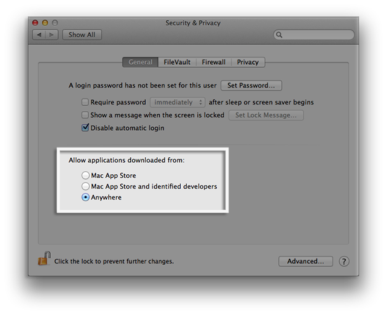

This is the most complete and oldest playable version of TUER:
Launch TUER
This is the blueprint of the abandoned version using JMonkeyEngine 2.0:
Launch TUER
This is the blueprint of the current version using JogAmp's Ardor3D Continuation:
 |
 |
||||||||||
| Operating system | GNU Linux | Apple Mac OS X | Microsoft Windows | ||||||||
| Version or distro | Debian, Ubuntu, Mint, ... | Mageia, Fedora, Redhat, ... | All | Lion, Mountain Lion, Mavericks, Yosemite | XP, Vista, 7, 8, 10 | ||||||
| Availability | available | available | available | available | available very soon | available | |||||
| Distributable | DEB package | RPM package | tar.gz archive | tar.bz2 archive | installer | zip archive | |||||
| 32-bit | 64-bit | 32-bit | 64-bit | 32-bit | 64-bit | universal | 32-bit | 64-bit | 32-bit | 64-bit | |
| Installation step(s) |  | ||||||||||
|
|
|
|
|
|||||||
This is the pre-alpha version of my RAD tool used to create first person shooters:
Software temporarily unavailable
{kind=link}